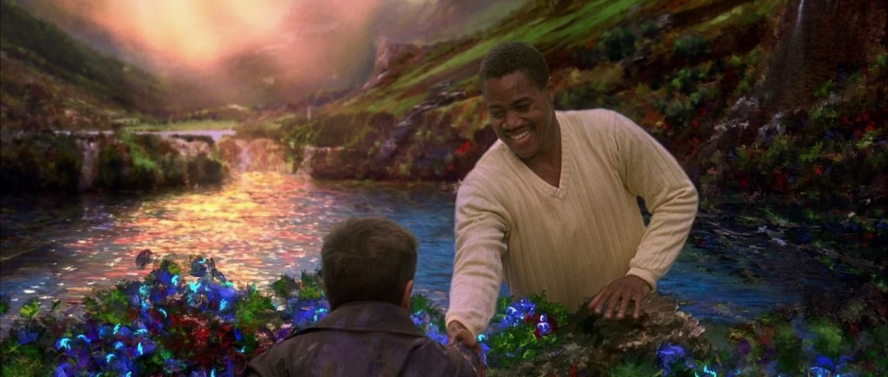
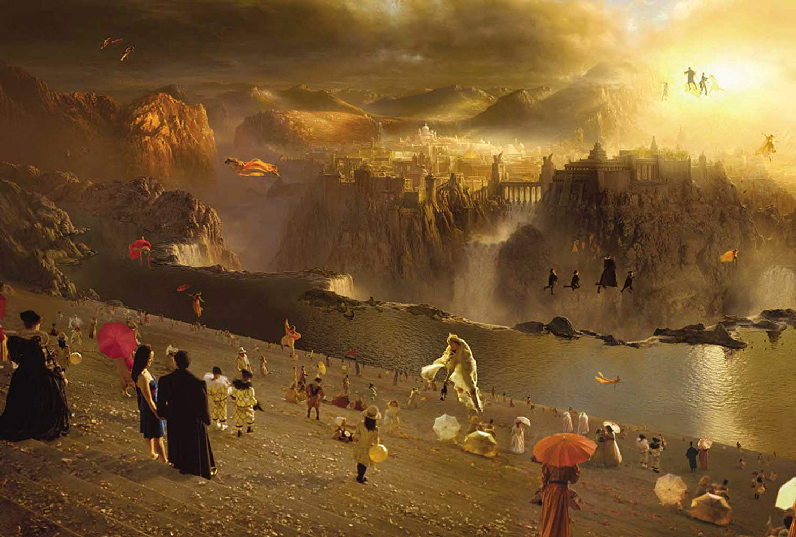
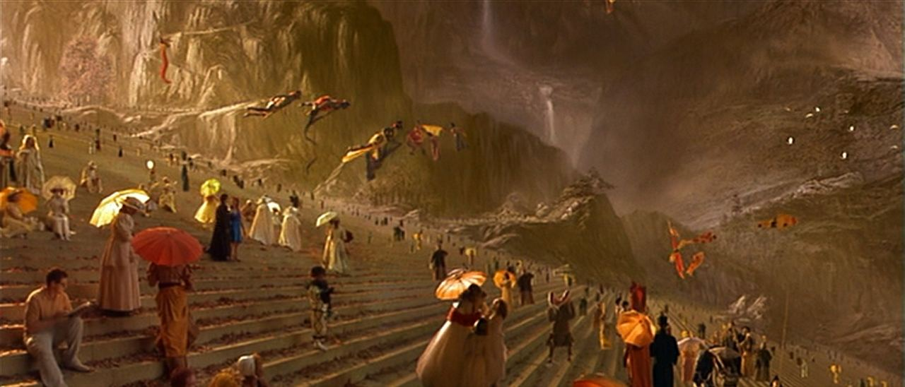
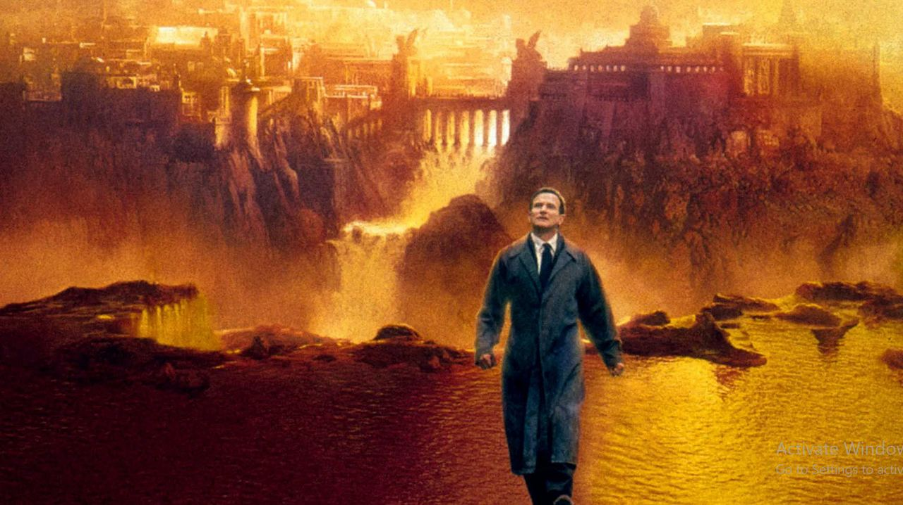
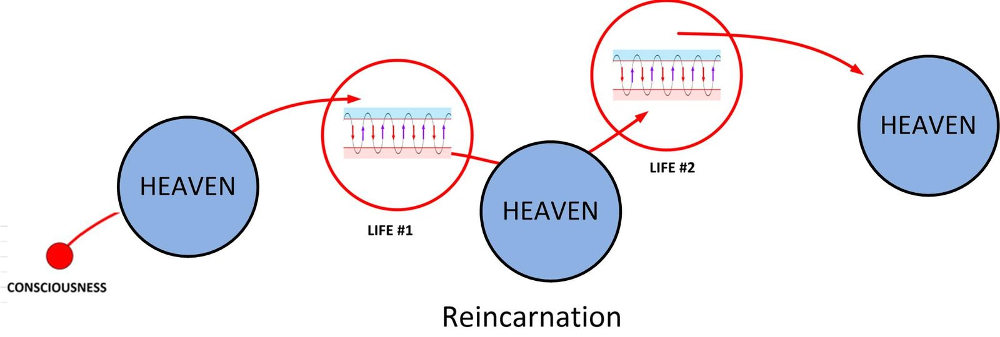
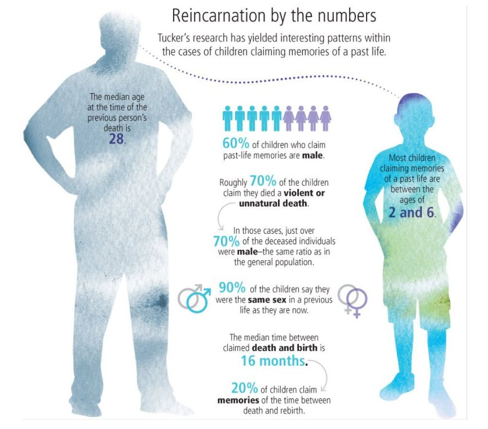
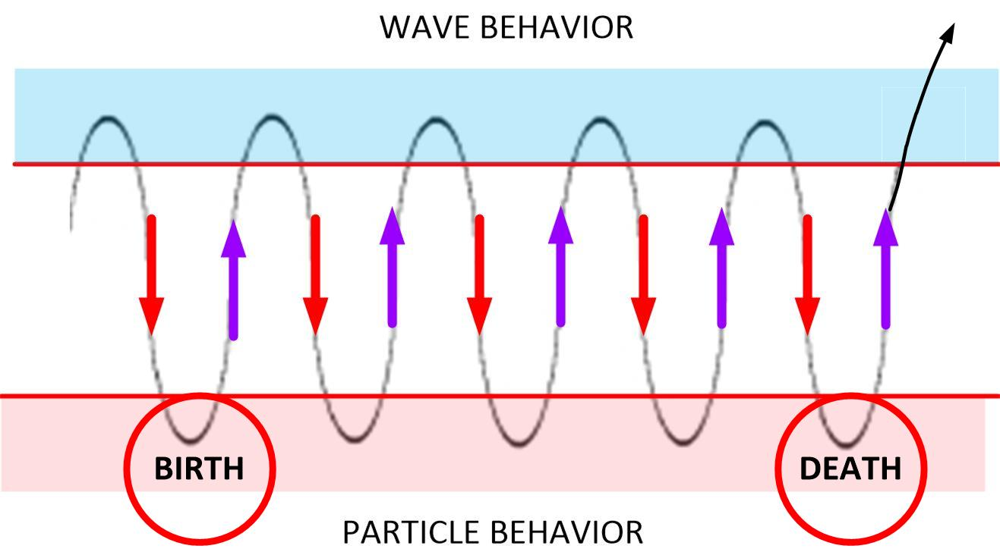

Based on a story by Richard Matheson, What Dreams May Come is a surrealist tale of the afterlife. While there are numerous things in the movie that are visually appealing, and a compelling story line, the movie itself depicts some critical aspects of the “afterlife” and Heaven incorrectly.
Yet, it has some VERY IMPORTANT messages for MM readers.
What Dreams May Come would have to be one of the most intelligent, emotional, visually beautiful, and well acted projects ever to grace the screen. And when you add in the story-line that includes rescuing a loved one who is suffering from amnesia and needs to be rescued, you can see the value of the movie content.
Especially in light of the content of “Alien Interview”.
Aside from the faulty story-line, and the inaccuracies of the depiction of Heaven, I would like to use it to help depict what the non-physical reality resembles for a disincarnate entity that returns to it. And at that, this is the purpose of this article. It is to use already available imagery to describe the non-physical world(s) for purpose of education and understanding.
Brief Movie Summary
While vacationing in Switzerland, physician Chris Nielsen (Robin Williams) meets artist Annie Collins (Annabella Sciorra). They are instantly attracted to each other, and bond as if they had known each other for a long time. They marry and have two children: Ian (Josh Paddock) and Marie (Jessica Brooks Grant). Their idyllic life comes to an end when the children die in a car crash. Life becomes very difficult: Annie suffers a mental breakdown, and the strains on their marriage threaten to lead to divorce, but they manage to struggle through their losses.
On the anniversary of the day they decided not to divorce, Chris is killed in a car accident. Unaware that he is dead and confused when nobody can interact with him, Chris lingers on Earth. He watches Annie’s attempts to cope with the loss and he attempts to communicate with her, despite advice from a spirit-like presence that it will only cause her pain. When his attempts only leave her more distraught, he decides to move on.
Chris awakens in Heaven, and finds that his immediate surroundings are controlled by his imagination. He meets a man (Cuba Gooding Jr.) whom Chris seems to recognize as Albert, his friend and mentor from his medical residency, and the spirit-like presence from his time as a “ghost” on Earth.
Albert will be his guide in this new life.
Albert teaches Chris about his new existence in Heaven, and how to shape his little corner of it and to travel to others’ “dreams”. They are surprised when a Blue Jacaranda tree appears unbidden in Chris’ surroundings, matching a tree in a new painting by Annie, which was inspired by Annie’s belief that she can communicate with Chris in the afterlife. Albert explains to Chris that this is a sign that the couple are truly soul mates.
However, Annie is overcome with despair and decides that Chris cannot, in fact, “see” the painting and destroys the piece. Chris sees his version of the tree disintegrate before his eyes which coincides with the painting being destroyed in the real world.

Chris laments he will not see his wife and encounters an Asian woman with the name tag “Leona”, whom he comes to recognize as his daughter Marie, living in an area shaped like a diorama she loved in life. The two share a tearful reunion.
Meanwhile on Earth, Annie is unable to cope with the loss of her husband. She then decides to commit suicide. Chris, who is initially relieved that her suffering is over, quickly becomes angry when he learns that those who commit suicide are sent to Hell; this is not the result of any judgment made against them, but that it is their nature to create “nightmare” afterlife worlds based on their pain.
Chris is adamant that he will rescue Annie from Hell, despite Albert’s insistence that no one has ever succeeded in doing so. Albert agrees to find Chris a “tracker” (who takes the form of Sigmund Freud) to help find Annie’s soul.
On the journey to Hell, Chris finds himself recalling his son, Ian. Remembering how he’d called him the one man he’d want at his side to brave Hell, Chris realizes Albert is Ian.
Ian explains that he chose Albert’s appearance because he knew that Chris would listen to Albert without reservation. Before they part ways, Ian begs Chris to remember how he saved his marriage following Ian and Marie’s deaths. Chris then journeys onward with the tracker.
After traversing a field containing the faces of the damned, they come to a dark and twisted replica of Chris and Annie’s house. The tracker then reveals himself as the real Albert, and warns Chris that if he stays with Annie for more than a few minutes he may become permanently trapped in Hell. All that Chris can reasonably expect is a chance to say a final farewell to Annie.
Chris enters the house to find Annie suffering from amnesia, unable even to remember her suicide and tortured by her decrepit surroundings. Unable to stir her memories, he “gives up”, but not the way the Tracker hoped he would; he chooses to join Annie forever in Hell.
As he announces his intent to stay to Annie, his words parallel something he had said to her when he left her in an institution following their children’s deaths, and she regains her memories even as Chris is succumbing to her nightmare.
Annie, wanting nothing more at that moment than to save Chris, ascends to Heaven, bringing Chris with her.
Chris and Annie are reunited with their children in Heaven, whose original appearances are restored. Chris proposes reincarnation, so that he and Annie can experience life together all over again. The film ends with Chris and Annie meeting again as young children in a situation roughly parallel to their first meeting.

Initial Reactions upon “arrival”
In the movie, he wakes up and doesn’t have any bearings. He doesn’t know what is going on, and is disoriented. Yet shortly afterwards, a companion and a beloved pet help him find his way.
In “real life”, this only occurs for the youngest consciousnesses.
Most entities pretty much realize what is going on rather rapidly. They realize that they are out of their physical body, and that things are different, and that they can hear things and understand things with a clarity that they did not have before.
Typically, those who have gone through many reincarnations (over and over again) know exactly what is going on and then immediate move outward and away from where the physical body may lie. Those really (inexperienced) consciousnesses get confused and disoriented, but they immediate see friends, family and associations that come to them and help them during this crisis.
So you need not worry. It is extraordinarily rare to be surprised once you stop cycling in and out of world-lines. You just stay on the Exit Template and hang out as a disincarnate spirit for a while.
Depiction of Heaven
It’s such an arty movie. The colors are great, the CGI is wonderful. The backgrounds and backdrops are immense and profound. All of which is true in the non-physical reality.

And true to form, there’s all sort of things going on that our physical senses are unable to discern. Everything from strange beings, to odd constructions and enormous (apparently man made) constructions. There’s all kinds of “stuff” in the non-physical reality that surrounds our physical reality.
Lack of a Life Review
One of the most disturbing things to me, about the movie is the lack of a “Life Review”. This is the most common event that disincarnate beings experience. And according to Dr. Newton, it occurs after the people enter the “tunnel of light”.

This is a fundamental aspect of the reincarnation process. You are born, live a life, obtain experiences, have a life review and then are re-injected back in the reincarnation process.
A Trapped Soul
Trapped by amnesia.
What an interesting story plot. You go to Purgatory to prevent someone from staying in Hell. They have no memory. So therefore they are helpless and being ignorant have no idea how to escape the Hell that they exist within.
But isn’t that what all of us are, at least according to the Tpe-1 extraterrestrial in Alien Interview?
Trapped on a never-ending cycle of endless reincarnations.
Pets and loved ones
Our loved ones are easy to track down. We, however, often need some help. As they often are in special locations (Heavens?) that require assistance to visit.
Never fear!
The good things you do now, and the good relationships that you build will never leave. Instead they will persist and be supportive of your journey in the non-physical worlds.
The decision to return to Earth together
I have covered this process on selection of the pre-birth world-line template and mapping out the life prior to reinsertion. Certainly there is a major review process involved, as well as particular elements of schooling. Dr. Newton has also covered this subject extensively.
Just because it wasn’t explored in great detail in the movie, does not mean that it is a minor decision. It’s a very involved process.
The most important lesson
All of this is fine and nice. But the real situation is that once you leave your body as a disincarnate consciousness, you are still attached to the MWI. You are really not in “Heaven”.
You are still running the world-line templates.
You still experience time.
Only now, stuck in the “wave” form. You are not in a physical form, and thus cannot alter the physical world around you.
Exit Template
So while you will see all sorts of things that you might have been unaware of when you were in the physical, you are really not in “Heaven”. Instead, you are still stuck on your “exit template”.
Exit Template
This is the MWI topographical map that your consciousness was on and following at the time of your death.
While…
A Pre-Birth World-line Template
Is the world-line template that was arranged for you (and by you) to obtain life experiences when you are first born.
For most people, the “Exit Template” will be the same as the “Pre-Birth World-Line Template”. For MM participants that practice affirmation prayer campaigns, and who have experienced “slides”, the templates will typically differ.
Slide
The movement from one template map on the MWI to another.
So what ever trajectory your consciousness was engaged upon at the time of your death, you continue it without reinsertion to the physical body. And all that “stuff” all around you is just what what you would be seeing if you were in the physical.
Now…
You, of course, are free to explore all over the non-physical worlds. But only around your world-lines as defined by your template.
You need to exist the Physical Earth Reality. (Both the non-physical and the physical) That will take you out and away and able to enter “Heaven”. And this bridge is known as the tunnel of light.
Uh Oh!
That’s right!
Alien Interview
This is what the type-1 grey extraterrestrial had to say…
Eventually The Domain discovered that a wide area of space is monitored by an "electronic force field" which controls all of the IS-BEs in this end of the galaxy, including Earth.
The electronic force screen is designed to detect IS-BEs and prevent them from leaving the area.
If any IS-BE attempts to penetrate the force screen, it "captures" them in a kind of "electronic net".
The result is that the captured IS-BE is subjected to a very severe "brainwashing" treatment which erases the memory of the IS-BE.
This process uses a tremendous electrical shock, just like Earth psychiatrists use "electric shock therapy" to erase the memory and personality of a "patient" and to make them more "cooperative".
On Earth this "therapy" uses only a few hundred volts of electricity. However, the electrical voltage used by the "Old Empire" operation against IS-BEs is on the order of magnitude of billions of volts! This tremendous shock completely wipes out all the memory of the IS- BE.
The memory erasure is not just for one life or one body. It wipes out all of the accumulated experiences of a nearly infinite past, as well as the identity of the IS-BE!
The shock is intended to make it impossible for the IS-BE to remember who they are, where they came from, their knowledge or skills, their memory of the past, and ability to function as a spiritual entity.
They are overwhelmed into becoming a mindless, robotic non-entity.
After the shock a series of post hypnotic suggestions are used to install false memories, and a false time orientation in each IS-BE.
This includes the command to "return" to the base after the body dies, so that the same kind of shock and hypnosis can be done again, and again, again -- forever.
The hypnotic command also tells the "patient" to forget to remember.
What The Domain learned from the experience of this officer is that the "Old Empire" has been using Earth as a "prison planet" for a very long time -- exactly how long is unknown -- perhaps millions of years.
And this the the critical part…
So, when the body of the IS-BE dies they depart from the body.
They are detected by the "force screen".
They are captured.
They are "ordered" by hypnotic command to "return to the light".
So thus you have this issue. How do you get off from the Exit Template as a disincarnate entity, yet still avoid the “Old Empire” traps?
Evasion and Escape
The Type-1 grey extraterrestrial continued on…
The idea of "heaven" and the "afterlife" are part of the hypnotic suggestion -- a part of the treachery that makes the whole mechanism work.
So, the idea of a “Heaven” and a life in Heaven is part of this entire illusion.
To me what this sounds like is that (he / she / it) is saying that being a disincarnate entity does not NEED to enter a tunnel of light to proceed any further. That, the access to other “places” in the non-physical worlds is obtainable without entry to Heaven.
But…
So, when the body of the IS-BE dies they depart from the body.
They are detected by the "force screen".
They are captured.
They are "ordered" by hypnotic command to "return to the light".
We, as consciousness, must figure out a way to avoid the “electronic force screen, get captured and go into the light for memory erasure and reprogramming.
Mind Blown!
Now, long time readers to MM will recognize this next little graphic. I used it in describing how consciousness enters the MWI from Heaven…
Remember this?

Here, I stated that the MWI was a bubble inside of a bigger universe known as Heaven.
And that the Soul resided inside of Heaven.
And thus our consciousness creates a path resembling a tunnel to get back to our Soul within Heaven.
But I no longer believe this.
I actually believe the Type-1 grey extraterrestrial that was interviewed in “Alien Interview”.
Reincarnation
Also from an earlier MM post.
If you look at this, it seems clear that the common denominator is that…
…going to Heaven always starts the injection process into a physical body as part of the reincarnation process.

The extraterrestrial reports…
After the IS-BE has been shocked and hypnotized to erase the memory of the life just lived, the IS-BE is immediately "commanded", hypnotically, to "report" back to Earth, as though they were on a secret mission, to inhabit a new body.
Each IS-BE is told that they have a special purpose for being on Earth.
But, of course there is no purpose for being in a prison -- at least not for the prisoner.
Animal Heaven
As far as I am aware of pets, and animals do not enter a “tunnel of light” to go to their respective Heavens. And they do retain all their memories and other experiences when they reincarnate. This is true for dogs, for cat and for horses.
- Animals do not enter a tunnel of light and retain their memories and self.
- Humans enter a tunnel of light and lose their memories and get re-injected fresh with no prior knowledge.
The only exceptions seem to be young men, who were killed and then reinserted to the MWI quickly without further processing. They remember their prior life but not the earlier ones.

Failure to go to Heaven
Let’s look at what happens when the consciousness fails to go back to Heaven.
This is what happens…

So the immediate effect is that you stick to your Exit Template.
The Guardian Angel / Mantid
I can tell you that you DO NOT NEED to enter the “Tunnel of Light” to meet your “Guardian Angel” (otherwise known as a Mantid). You can take an injection of DMA for a brief but immediate consultation. And because of this fact, it seems quite clear that they are associated with you within this MWI.
What are they?
Catholic religion say that they are sent from Heaven. And that they dwell in Heaven.
It also says that there were good Angels and Bad Angels.
And the Bad Angels were banished to Hell. While the Good Angels stayed in Heaven.
I really do not know how helpful this Intel is.
One thing is for certain, there is no reason at all why you cannot meet your “Guardian Angel” or Mantid upon you death from the Exit Template. Though, I do not know if that is a good or a bad thing.
I can tell you that in my dealings with them, I never left the Reality Universe, and entered “Heaven”.
At least not that I was aware of. As far as I recall, all my dealings has been on the strange worlds that surround our Reality Universe in the non-physical realms.
Therefore, you MUST conclude that you do not NEED to enter the “tunnel of light” to meet with Angels.
Rabbit Hole
I just had a podcast today where I discussed Rabbit Holes. The idea is that once we get on a “binge” chasing after something, we often lose our way. We get caught up in the what it’s, and elaborations, and create extensive background stories to figure everything out.
Such was the case with Y2k, Mad Cow, and Exploding cell phones near gas pumps.
Today it is 5G radiation, Draco Reptilians, and Vaxx mind control.
And we just don’t want to go down that “Rabbit Hole” in regards to what happens once you enter the “Tunnel of Light”. Which is the great works that Dr. Newton has explored. Instead, we must dwell on the scant references that are based on what happens if YOU DON’T enter the “tunnel of light”.
Remember
Escape is possible.
The net result is that an IS-BE is unable to escape because they can't remember who they are, where they came from, where they are. They have been hypnotized to think they are someone, something, sometime, and somewhere other than where they really are.
The Domain officer who was "assassinated" while in the body of Archduke of Austria was, likewise, captured by the "Old Empire" force. Because this particular officer was a high powered IS-BE, compared to most, he was taken away to a secret "Old Empire" base under the surface of the planet Mars.
They put him into a special electronic prison cell and held him there.
Fortunately, this Domain officer was able to escape from the underground base after 27 years in captivity.
When he escaped from the "Old Empire" base, he returned immediately to his own base in the asteroid belt.
His commanding officer ordered that a battle cruiser be dispatched to the coordinates of the base provided by this officer and to destroy that base completely.
This "Old Empire" base was located a few hundred miles north of the equator on Mars in the Cydonia region.
What to watch out for
Consider this warning…
The most basic method to capture and immobilize an IS-BE is through the use of various kinds of "traps".
IS-BE traps have been made and put in place by many invading societies, such as the one that established the "Old Empire", beginning about sixty-four trillion years ago.
Traps are often set up in the "territory" of the IS-BEs being attacked.
Usually a trap is set with the electronic wave of "beauty" to attract the interest and attention of the IS-BE. When the IS-BE moves toward the source of the aesthetic wave, such as a beautiful building or beautiful music, the trap is activated by the energy put out by the IS-BE.
One of the most common trap mechanism uses the IS-BE's own thought energy output when the IS- BE tries to attack or fight back against the trap.
The trap is activated and energized by the IS-BE's own thought energy.
The harder the IS-BE fights against the trap, the more it pulls the IBS toward it and keeps them "stuck" in the trap.
Sounds ingenious and difficult.
Conclusion
There is a lot of speculation and misinformation concerning Heaven and the non-physical reality. Most humans do not want to die, have amnesia, and then return to start all over again in a new life.
Fuck that!
If The Domain sent ships to every corner of the universe in search of "Hell", their quest could end on Earth. What greater brutality can be inflicted on anyone than to erase the spiritual awareness, identity, ability, and memory that is the essence of oneself?
But looking at what we do know, and then extrapolating from reliable sources a picture emerges of what happens and how we can handle ourselves upon death.
We emerge from the Exit Template upon death and stay there in the non-physical reality until we enter the “tunnel of light”. Then, all indications are that what happens is exactly as described by the Type-1 extraterrestrial in “Alien Interview”, and we are recycled back to live yet another life all over again.
The Doctor Newton writings, as great as they are, approach this situation as normal. That this is just the way it is, and that there are no other options.
The Type-1 grey extraterrestrial says otherwise.
The question now becomes [1] How do we avoid the “tunnel of light”, [2] Avoid and evade the electronic “force field” that exists around this physical region, and [3] go “elsewhere” and stop the entire cycle of death and rebirth.
Stay tuned. I do have answers!
And they employ the Type-1 greys, and (possibly) your “Guardian Angel” the Mantid assigned to you.
Although the military base of the "Old Empire" was destroyed, unfortunately, much of the vast machinery of the IS-BE force screens, the electroshock / amnesia / hypnosis machinery continues to function in other undiscovered locations right up to the present moment. The main base or control center for this "mind control prison" operation has never been found. So, the influences of this base, or bases, are still in effect.
And to this end, they seem receptive to assist…
The members of the lost Battalion and many other IS-BEs on Earth, could be valuable citizens of The Domain...
Unfortunately, there has been no workable method conceived to emancipate the IS-BEs from Earth.
... until such time as the proper resources can be allocated to locate and destroy the "Old Empire" force screen and amnesia machinery and develop a therapy to restore the memory of an IS-BE."
I do believe that now is that time.